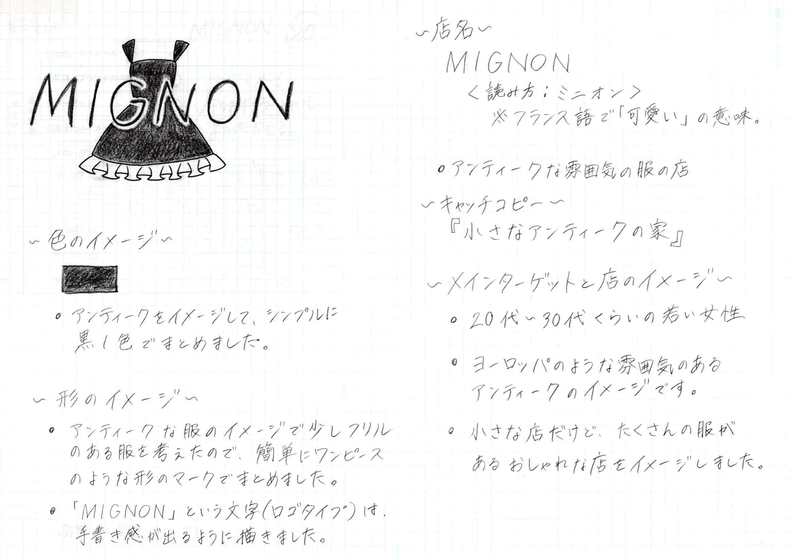

Profile
野見山 愛花Nomiyama Manaka
2月7日生まれ。アニメ・ゲームが好き。
専門学校福岡カレッジ・オブ・ビジネス、Webメディア・ITシステム科所属。
使用経験
プログラミング…C、JavaScript
Web制作…HTML、CSS
（ソフト）…Adobe Illustrator、Adobe Photoshop
取得資格
- 全経主催文書処理能力検定（ワープロ）2級
- 全経主催簿記能力検定3級
- サーティファイ主催C言語プログラミング能力認定試験3級
- サーティファイ主催Webクリエイター能力認定試験エキスパート
- サーティファイ主催Word文書処理技能認定試験1級
- 情報処理推進機構主催ITパスポート試験
- 普通自動車第一種免許
- （茶道表千家（入門、習事、飾物））
Works
ロゴタイプデザイン↓ 
キャラクターデザイン↓

| 社名 | Dimention（訳：次元） |
| 事業内容 | CGアニメーション制作 |
| サイトイメージ | 質の高いCGを届ける、かっこいいイメージ |
実際に作ってみました Dimention
ワイヤーフレーム（トップ）↓

ワイヤーフレーム（セカンド）↓